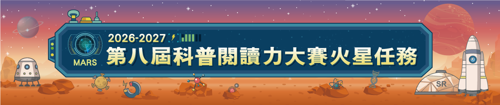
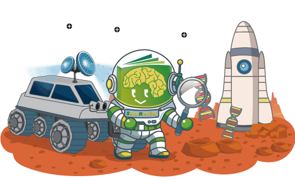
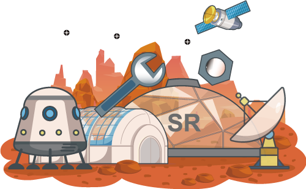
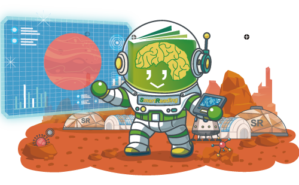
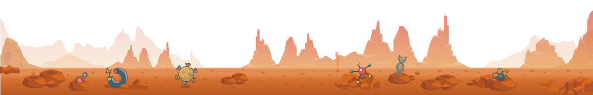

任務進度

小書博特與火星六大謎團
SR紀元3325年，人類已在火星建立生態研究站，探測車與AI機器人持續探索這顆神秘星球。
某天，SR星球收到來自火星深處的神祕訊號，來源竟指向從未探索過的區域！那裡究竟藏著什麼？是否存在未知生命？
跨世代閱讀AI導航員—小書博特決定接下這項任務。面對重重挑戰，它需要運用天文、生命科學及AI科技等跨領域知識，破解線索、揭開火星的神祕面紗！
任務數據截至：2026/10/24 15:39
現在，邀請你加入火星探索隊，透過閱讀完成門檻任務、六大主題任務，揭開火星神祕面紗，寫下人類新篇章。



地球基地 (0%)
整體探索總進度：50% (已解鎖 2 個祕密)
火星研究站 (100%)
通訊狀態：連線良好
已解鎖：宇宙啟航、星際軌道
下一站：太空探測機器人
